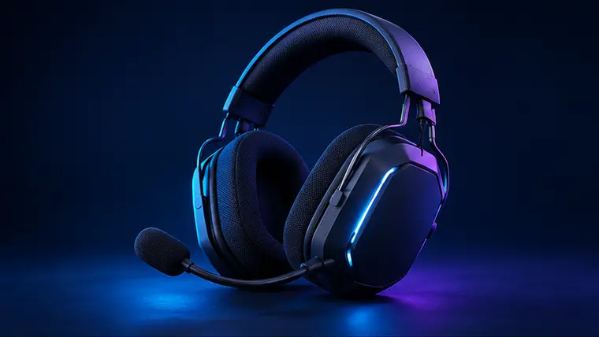

Sony INZONE H5
Research-based product guide
A lightweight wireless headset designed around PC and PlayStation gaming.
Players prioritising comfort, chat and straightforward game audio.
The exact version, live price, seller and availability are shown on Amazon.
Is the Sony INZONE H5 worth considering?
Our verdict
A lightweight wireless headset designed around PC and PlayStation gaming. It earns a place on our shortlist because it addresses a clear setup need, but the checks below matter before ordering.
Reasons to consider it
- PC and PS5 focus
- Wireless operation
- Lightweight design
Things to check
- Not intended as a universal Xbox headset
- Confirm colour and seller before ordering
Sony INZONE H5: quick buying guide
The details that matter
Pros and trade-offs
Use the reasons to consider and things to check below as a fast suitability test. A strong product can still be the wrong choice if its shape, layout, connection or platform support does not match your setup.
Compatibility checklist
- Confirm the exact model and variant in the listing title.
- Check the supported PC, console, display or desk requirements.
- Review what cables, adapters or accessories are included.
- Check the seller, returns terms and current availability on Amazon.
Why it made our shortlist
This product addresses a clear setup need and has features that can make sense for the right buyer. Our assessment is editorial and research-based; it is not presented as a hands-on test.
What this review means
Review summary
This is an editorial, research-based assessment using product specifications, compatibility information and recurring buyer considerations. SetupFinds does not claim hands-on testing or reproduce individual Amazon customer reviews.
Before buying
- Confirm the exact model and version in the Amazon title.
- Check compatibility with your PC, console, monitor or desk.
- Review the current seller, returns information and included accessories.
- Compare the live price with alternatives in the same category.